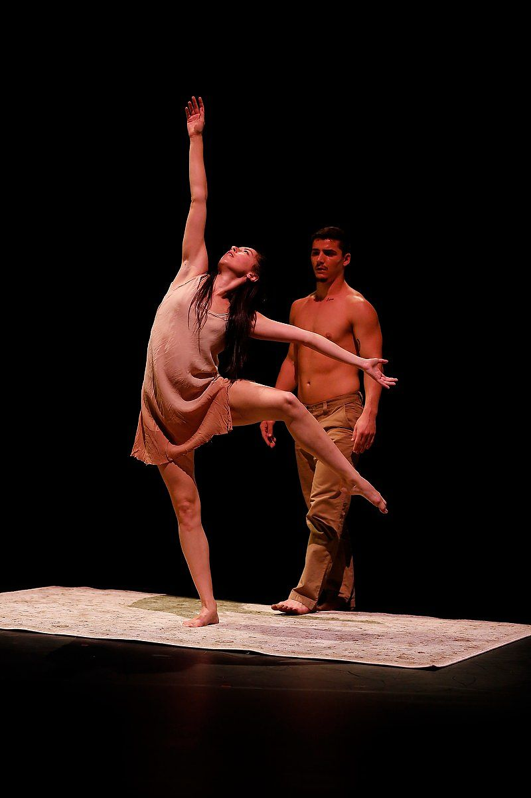

bio
Yvonne Lacombe was born and raised in Western Massachusetts, where she studied ballet and tap from a young age. At the age of 13, she was accepted into Artistic Dance Conservatory‘s
youth ballet company and their competitive performance team under the direction of Jennifer Dubilo and Rebecca Sutter. As part of ADC’s pre-professional programs, Yvonne performed lead roles in a variety of ballets including Peter Pan, Alice
in Wonderland, and Cinderella. During her 6 years with ADC, she performed throughout the Northeastern United States at showcases such as the Massachusetts Dance Festival, the Boston Contemporary Dance Festival,
and the International Festival of Arts and Ideas. Yvonne was also recognized at both a national and international level, receiving titles such as Dance Spirit Magazine’s Future Star (January 2010) and the gold medal in the duet category at the World Modern Dance Championships in Poland (2008).
Yvonne is a 2015 graduate of California Institute of the Arts in Valencia, where she received a Bachelor of Fine Arts degree in Dance with a minor in Digital Arts. Her
collegiate performance experience includes works by Rosanna Gamson, Andre Tyson, Daniel Charon, Colin Connor, Andrea Gise, Leslie Scott, Sidra Bell and Tanztheater Wuppertal’s Jonathan Fredrickson. In addition to performing, Yvonne has choreographed
solo, duet, and group works for multiple shows through the Sharon Disney Lund School of Dance program including patoisDEUX, which premiered at REDCAT in Downtown LA. Post graduation, Yvonne performed abroad with Leslie Scott’s BODYART at the 2015 Edinburgh Festival Fringe. In August 2016, she received her Level 1 Certification in Donna Krasnow PhD's C-I Training™ program for dancers. Currently, Yvonne continues to reside in Los Angeles where she is actively pursuing various short-term projects with fellow LA artists.